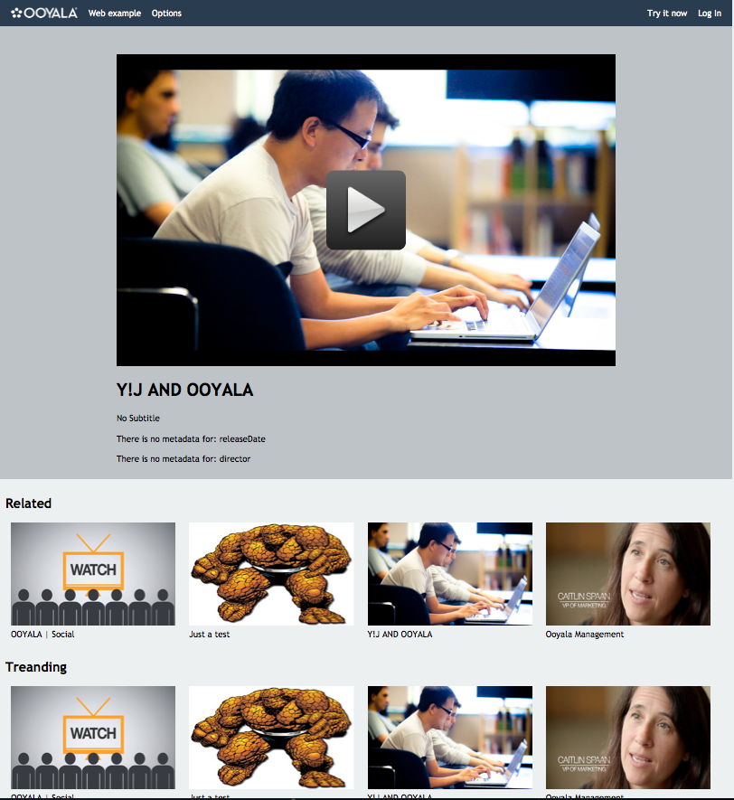

This sample produces web pages with several Ooyala features.
The HTML5 starting sample includes an embedded video, SEO features that pull the title and description from Backlot, an SEO feature that pulls metadata about the video from Backlot, related videos from Discovery, trending videos from Discovery and code that enables the page to be embedded in a Twitter feed.
The following shows a sample web page produced from the HTML5 starting sample:
The HTML5 starting sample is a multi-feature code sample that you can inspect and use as a template for building your own web pages:
All of the sample code is located in the application directory. To get this code in our GitHub repository, use the URL: https://github.com/ooyala/code-samples/blob/master/application.
To work with this sample, you only need to focus on the code in these directories: assets, config, controllers, libraries, third_party, and views.
The following diagram shows the organization of the HTML5 Web Example directories. You will see other directories. These are for another sample, so you can skip over them.
├── application (Main folder where the CodeIgniter application lives) │ ├── assets (Folder where we keep our CSS and JS) │ │ ├── Web_Example │ │ │ └──javascript │ ├── cache (CodeIgniter cache, you don't need to worry about this) │ ├── config (Here we have all the configuration files, both for CodeIgniter and ooyala. You only need to look at ooyala_config) │ ├── controllers (This is where the main logic lives. Here we handle routing and passing all the server data to the views) | └── web_example.php │ ├── core (CodeIgniter core. Don't touch this) │ ├── errors (CodeIgniter specific) │ ├── helpers (CodeIgniter specific) │ ├── hooks (CodeIgniter specific) │ ├── language (CodeIgniter specific) │ │ └── english (CodeIgniter specific) │ ├── libraries (Here you can define your own libraries, and here lives our ooyala.php library ) │ ├── logs (CodeIgniter specific) │ ├── models (CodeIgniter specific) │ ├── third_party (This folder holds all third-party libraries, helpers, and so forth that you bring to the application) │ │ └── php-v2-sdk (This is the Ooyala SDK for php) │ │ └── test (This is the test suite for the SDK) │ └── views (Here we define all the views for the application. This folder, along with controllers, are the main points of interest for this example) | | └── Web_example ├── system (CodeIgniter system. You don't need to review or modify this code) └── README.md (Here we have information about the code sample that you should review) └── index.php (CodeIgniter file. You don't need to review or modify this code) └── license.php (CodeIgniter file. You don't need to modify this code)
To install the Sample Code, you need to:
Use the Ooyala PHP Server SDK included with the sample in GitHub. If needed, you can also download the Ooyala PHP Server SDK from the Ooyala Support > Developers >Resources web page.